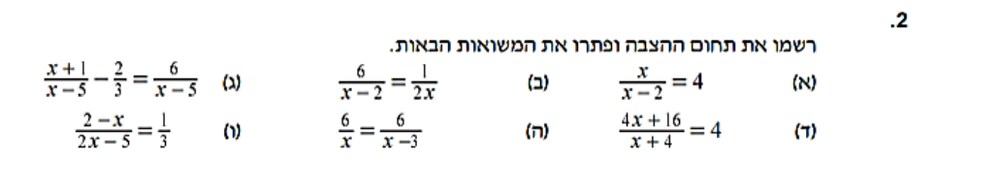

בתחנה הקודמת למדת לדבר בשפה של האלגברה. עכשיו מגיע הכלי המרכזי של כל השנה:
לפתור משוואה. כל הסוד נמצא בתמונה אחת — מאזניים — ובכלל אחד:
מה שעושים לאגף אחד, עושים גם לשני.
בסוף העמוד תדעי: לפתור משוואה שלב-שלב עם רישום הפעולות באדום ·
לבדוק כל תשובה בהצבה, בלי שיגידו לך · להעיף שברים ממשוואה בכפל במכנה המשותף —
גם כשה-\(x\) במכנה · לפתור אי-שוויון ולזהות לבד מתי הסימן מתהפך.
מהי בעצם משוואה? שני ביטויים, וסימן שוויון ביניהם. והשוויון הזה הוא הבטחה:
שני הצדדים שוקלים בדיוק אותו דבר. תחשבי על מאזניים מאוזנות:
המאזניים כמשוואה
$$\underbrace{\textcolor{#2563EB}{3x}}_{\textcolor{#2563EB}{\text{שלוש הקופסאות}}}+\underbrace{\textcolor{#059669}{5}}_{\textcolor{#059669}{\text{המשקולת הירוקה}}}\;=\;\underbrace{20}_{\text{המשקולת הגדולה}}$$
בכל קופסה כחולה מסתתר אותו מספר לא ידוע — \(x\). הציור והנוסחה הם אותו דבר בדיוק.
כלל המאזניים — הכלל היחיד של העמוד
כדי שהמאזניים יישארו מאוזנות, כל פעולה שעושים על אגף אחד עושים
בדיוק אותה פעולה גם על האגף השני.
כל מה שנעשה מכאן והלאה הוא רק הפעלה חכמה של הכלל הזה, שוב ושוב.
ומה אם מורידים 5 רק מצד אחד? המאזניים מתעקמות, והשוויון כבר לא נכון.
לכן מעכשיו כל פעולה תיכתב באדום בסוף השורה —
סימן שהיא הופעלה על שני האגפים גם יחד.
2פתרון מלא, שורה אחרי שורה
המטרה בכל משוואה אחת: להשאיר את \(\textcolor{#2563EB}{x}\)
לבד באגף שלו. בכתיב של מחברת רושמים את הפעולה אחרי לוכסן בסוף השורה —
למשל \(/\;{-5}\) — ככה גם המורה רואה בדיוק מה עשית.
זה הסדר הקבוע:
פתחי סוגריים, אם יש.
כנסי איברים דומים בכל אגף בנפרד.
רכזי את האיברים עם \(x\) באגף אחד, ואת המספרים באגף השני.
חלקי במקדם של \(x\).
בדקי בהצבה במשוואה המקורית.
נפתור את משוואת המאזניים עד הסוף:
הפתרון המלא — הפעולות באדום
$$\begin{aligned}
3\textcolor{#2563EB}{x}+5 &= 20 &&\qquad\textcolor{#C0392B}{/\;{-5}}\\[2pt]
3\textcolor{#2563EB}{x} &= 15 &&\qquad\textcolor{#C0392B}{/\;{:}\,3}\\[2pt]
\textcolor{#2563EB}{x} &= \mathbf{5}
\end{aligned}$$
כחול — \(x\), הנעלם שאנחנו מבודדות אדום — הפעולה שהופעלה על שני האגפים גם יחד
הבדיקה — שנייה אחת שמצילה נקודות
מציבות את התשובה במשוואה המקורית, במקום שבו עמד ה-\(\textcolor{#2563EB}{x}\):
$$3\cdot\textcolor{#2563EB}{5}+5=15+5=20\;\checkmark$$
יצא בדיוק 20 — המאזניים מאוזנות, התשובה נכונה.
את הבדיקה הזו עושים תמיד, גם כשלא מבקשים. היא תופסת כמעט כל טעות.
שימי לב: איזו פעולה משחררת את ה-3?
\(3x\) פירושו 3 כפול\(x\) —
ולכן נפרדים מה-3 בפעולה ההפוכה לכפל, חילוק:
\(x=15:3=\)5.
חיסור מפרק רק מה שחובר.
והבדיקה מאשרת: \(3\cdot 5+5=20\) ✓
3מה עושים כש-x מופיע בשני האגפים?
לפעמים הנעלם מפוזר משני צידי המאזניים, למשל
\(5x-3=2x+9\).
שום דבר לא השתנה בכלל המשחק — פשוט מתחילים בלכנס את כל
ה-\(\textcolor{#2563EB}{x}\)-ים לאגף אחד.
טיפ קטן: מחסרים את הקטן מביניהם (כאן \(2x\)),
כדי להישאר עם מקדם חיובי.
x בשני האגפים — מכנסות אותו הביתה
$$\begin{aligned}
5\textcolor{#2563EB}{x}-3 &= 2\textcolor{#2563EB}{x}+9 &&\qquad\textcolor{#C0392B}{/\;{-2x}}\\[2pt]
3\textcolor{#2563EB}{x}-3 &= 9 &&\qquad\textcolor{#C0392B}{/\;{+3}}\\[2pt]
3\textcolor{#2563EB}{x} &= 12 &&\qquad\textcolor{#C0392B}{/\;{:}\,3}\\[2pt]
\textcolor{#2563EB}{x} &= \mathbf{4}
\end{aligned}$$
כחול — הנעלם, שהיה בשני האגפים וכונס לאחד אדום — כל פעולה, על שני האגפים, שורה אחר שורה
והבדיקה כאן כפולה ויפה: מציבים \(x=4\) בכל אגף בנפרד —
אגף שמאל: \(5\cdot 4-3=17\).
אגף ימין: \(2\cdot 4+9=17\).
שני האגפים נפגשו על 17 — בדיוק כמו שמאזניים צריכות ✓
ומה אם ה-x נעלם לגמרי משני האגפים? שני מקרים מיוחדים
לפעמים תוך כדי כינוס האיברים ה-\(x\) מתבטל, ומה שנשאר מגלה הכל:
נשאר משפט שקר — אין פתרון.
למשל \(4x+3=4x-2\):
אחרי \(\textcolor{#C0392B}{/\;{-4x}}\) נשאר
\(3=-2\) — לא נכון אף פעם, ולכן אף מספר לא פותר את המשוואה.
נשאר משפט אמת — כל מספר הוא פתרון.
למשל \(2(x+4)=2x+8\):
פותחים סוגריים ומקבלים \(2x+8=2x+8\) —
שני האגפים היו מההתחלה אותו ביטוי בתחפושת, וכל הצבה תעבוד.
4משוואות עם שברים
ומה עושים כשבתוך המשוואה מופיעים שברים, כמו
\(\frac{4x-1}{5}-\frac{6x-1}{10}=0\) מעבודת הקיץ שלך?
מעיפים את השברים: כופלים את כל המשוואה במכנה המשותף.
כאן המכנים הם 5 ו-10, אז המכנה המשותף הוא 10 — כופלים בו את שני האגפים,
וכל השברים נעלמים בבת אחת:
מעיפים את השברים — כפל ב-10 על כל המשוואה
$$\begin{aligned}
\frac{4\textcolor{#2563EB}{x}-1}{5}-\frac{6\textcolor{#2563EB}{x}-1}{10} &= 0 &&\qquad\textcolor{#C0392B}{/\;{\cdot}\,10}\\[5pt]
2(4\textcolor{#2563EB}{x}-1)-(6\textcolor{#2563EB}{x}-1) &= 0\\[2pt]
8\textcolor{#2563EB}{x}-2-6\textcolor{#2563EB}{x}+1 &= 0\\[2pt]
2\textcolor{#2563EB}{x}-1 &= 0 &&\qquad\textcolor{#C0392B}{/\;{+1}}\\[2pt]
2\textcolor{#2563EB}{x} &= 1 &&\qquad\textcolor{#C0392B}{/\;{:}\,2}\\[2pt]
\textcolor{#2563EB}{x} &= \mathbf{\tfrac{1}{2}}
\end{aligned}$$
אדום — הכפל ב-10, ואחריו הפעולות הרגילות על שני האגפים\(10:5=2\) — לכן השבר הראשון הפך ל-\(2(4x-1)\);
\(10:10=1\) — לכן השני איבד את המכנה לגמרי
שימי לב לרגע המסוכן בשורה השלישית: המינוס שלפני הסוגריים התחלק על שני האיברים —
\(-(6x-1)=-6x+1\), עם פלוס בסוף.
ובדיקה בהצבה, כמו תמיד, במשוואה המקורית עם \(x=\tfrac{1}{2}\):
\(\frac{4\cdot\frac{1}{2}-1}{5}=\frac{1}{5}\)
וגם \(\frac{6\cdot\frac{1}{2}-1}{10}=\frac{2}{10}=\frac{1}{5}\) —
ההפרש ביניהם באמת 0 ✓
שימי לב
כשכופלים במכנה המשותף — כופלים כל איבר במשוואה,
גם את אלה שאין להם שבר בכלל.
למשל ב-\(\frac{x}{2}+3=5\): אחרי כפל ב-2 מקבלים
\(x+6=10\) — גם ה-3 וגם ה-5 הוכפלו.
מי שכופלת רק את השבר נשארת עם \(x+3=5\) —
משוואה אחרת לגמרי, עם פתרון שגוי.
ומה אם ה-x יושב בעצמו במכנה?
בעבודת הקיץ זה נראה למשל כך: \(\frac{x}{x-2}=4\).
הכלל זהה — כופלים במכנה כדי להעיף את השבר — אבל כשה-\(x\)
במכנה חובה לעצור רגע לפני שפותרים, ולרשום אילו ערכים אסורים
(זה בדיוק הרעיון של הסעיף הבא — תחום הצבה):
המכנה \(x-2\) מתאפס כשמציבים 2, ולכן
\(x\ne 2\).
x במכנה — קודם תחום הצבה, ואז מעיפים את השבר
$$\text{תחום הצבה:}\;\;\textcolor{#2563EB}{x}\ne 2$$
$$\begin{aligned}
\frac{\textcolor{#2563EB}{x}}{\textcolor{#2563EB}{x}-2} &= 4 &&\qquad\textcolor{#C0392B}{/\;{\cdot}\,(x-2)}\\[5pt]
\textcolor{#2563EB}{x} &= 4(\textcolor{#2563EB}{x}-2)\\[2pt]
\textcolor{#2563EB}{x} &= 4\textcolor{#2563EB}{x}-8 &&\qquad\textcolor{#C0392B}{/\;{-4x}}\\[2pt]
-3\textcolor{#2563EB}{x} &= -8 &&\qquad\textcolor{#C0392B}{/\;{:}\,({-3})}\\[2pt]
\textcolor{#2563EB}{x} &= \mathbf{\tfrac{8}{3}}
\end{aligned}$$
כחול — הנעלם, שהפעם מסתתר גם במכנה אדום — הפעולות; הכפל ב-\((x-2)\) העיף את השבר
ובסוף — שתי בדיקות במקום אחת.
קודם שהתשובה בכלל מותרת: \(\tfrac{8}{3}\) אינו 2 — מותר ✓
ואז הצבה במשוואה המקורית:
\(\frac{\;\tfrac{8}{3}\;}{\tfrac{8}{3}-2}=\frac{\;\tfrac{8}{3}\;}{\tfrac{2}{3}}=4\) ✓
שתיהן עברו — הפתרון \(x=\tfrac{8}{3}\) נכון.
וזה בסדר גמור שהוא לא מספר שלם.

התרגיל האמיתי מעבודת הקיץ שלך: "רשמו את תחום ההצבה ופתרו את המשוואות הבאות".
סעיף א הוא בדיוק הדוגמה שפתרנו עכשיו — וסעיף ד מחכה לך בתרגיל האחרון למטה,
ומסתתרת בו הפתעה.
שלב 2 · לבד עם רשת
x במכנה
נתונה המשוואה \(\frac{x}{x-3}=2\).
רשמי תחום הצבה ומצאי את \(x\).
\(x=\)
הצגי פתרון מלא
קודם תחום הצבה: המכנה \(x-3\) מתאפס
ב-\(x=3\), ולכן \(x\ne 3\).
עכשיו מעיפים את השבר:
עומר פתר את סעיף ד מהתרגיל שבתמונה — \(\frac{4x+16}{x+4}=4\).
הוא רשם תחום הצבה \(x\ne -4\), כפל ב-\((x+4)\)
וקיבל \(4x+16=4x+16\). אחרי חיסור
\(4x\) משני האגפים נשאר לו \(16=16\) —
והוא כתב: "ה-x נעלם לי, כנראה טעיתי".
עומר לא טעה באף צעד. מה התשובה הנכונה לתרגיל — ולמה?
הצגי תשובה
\(16=16\) הוא משפט אמת — נכון תמיד, בלי שום
\(x\). את המקרה הזה כבר פגשנו
בסעיף 3: כשה-\(x\) מתבטל
ונשאר משפט אמת, כל הצבה פותרת את המשוואה.
ולמה זה קרה דווקא כאן? כי המונה הוא בדיוק פי 4 מהמכנה:
השבר שווה 4 עבור כל הצבה מותרת — המשוואה הייתה זהות בתחפושת.
אבל נשאר סייג אחד, וזה בדיוק תפקידו של תחום ההצבה שעומר רשם:
ב-\(x=-4\) המכנה מתאפס, ושם המשוואה בכלל לא קיימת.
התשובה הנכונה: כל \(x\) הוא פתרון,
חוץ מ-\(x=-4\) — אינסוף פתרונות.
הפתרונות על ציר המספרים: הכחול מכסה את כל הציר,
לשני הכיוונים, וחור אחד בלבד — עיגול ריק ב-\(-4\),
הערך האסור.
בדיקה בשתי הצבות שונות — \(x=1\):
\(\frac{20}{5}=4\) ✓, וגם \(x=0\):
\(\frac{16}{4}=4\) ✓ — באמת כל מספר מותר עובד.
5כש-x יושב במכנה — תחום הצבה
לפעמים הנעלם מגיע בתוך שבר, למטה:
\(\dfrac{3}{\textcolor{#2563EB}{x}}\).
לפני שנוגעים במשוואה כזו, עוצרות לרגע אחד של זהירות.
אסור לחלק באפס
מכנה של שבר לעולם לא יכול להיות 0. לכן כשיש
\(x\) במכנה, רושמים לפני שפותרים אילו ערכים אסורים —
זה נקרא תחום הצבה:
ב-\(\dfrac{3}{\textcolor{#2563EB}{x}}\) חייבים
\(\textcolor{#2563EB}{x}\ne 0\),
וב-\(\dfrac{7}{\textcolor{#2563EB}{x}-2}\) חייבים
\(\textcolor{#2563EB}{x}\ne 2\) (כי הצבת 2 מאפסת את המכנה).
ובסוף הפתרון בודקים שהתשובה שקיבלנו בכלל מותרת.
דוגמה קצרה — קודם תחום הצבה, ואז פותרים
$$\text{תחום הצבה:}\;\;\textcolor{#2563EB}{x}\ne 0$$
$$\begin{aligned}
\frac{6}{\textcolor{#2563EB}{x}} &= 3 &&\qquad\textcolor{#C0392B}{/\;{\cdot}\,x}\\[2pt]
6 &= 3\textcolor{#2563EB}{x} &&\qquad\textcolor{#C0392B}{/\;{:}\,3}\\[2pt]
\textcolor{#2563EB}{x} &= \mathbf{2}
\end{aligned}$$
כחול — הנעלם, הפעם בתוך המכנה אדום — הפעולות על שני האגפים (כולל הכפל ב-\(x\) שמעלים אותו מהמכנה)
קיבלנו \(x=2\), ו-2 אינו הערך האסור (0) — הפתרון מותר.
בדיקה: \(\frac{6}{2}=3\) ✓.
בתיכון הרעיון הקטן הזה יהפוך לנושא שלם, אז שווה להתרגל אליו כבר עכשיו.
6אי-שוויונות — והכלל שהופך את הסימן
אי-שוויון שואל שאלה קצת אחרת: לא "איזה מספר אחד מקיים את השוויון",
אלא אילו מספרים מקיימים למשל
\(3x+2\lt 11\). התשובה היא לא מספר בודד —
היא טווח שלם, קרן שלמה על ציר המספרים.
פותרים בדיוק כמו משוואה, עם אותן פעולות באדום:
אי-שוויון בלי דרמה — כל הפעולות במספרים חיוביים
$$\begin{aligned}
3\textcolor{#2563EB}{x}+2 &\lt 11 &&\qquad\textcolor{#C0392B}{/\;{-2}}\\[2pt]
3\textcolor{#2563EB}{x} &\lt 9 &&\qquad\textcolor{#C0392B}{/\;{:}\,3}\\[2pt]
\textcolor{#2563EB}{x} &\lt 3
\end{aligned}$$
כחול — הנעלם אדום — הפעולות; חילקנו ב-3, מספר חיובי, ולכן הסימן נשאר כמו שהוא
אזהרה — הכלל של העמוד
כשכופלים או מחלקים את שני האגפים במספר שלילי —
הופכים את סימן האי-שוויון:
\(\lt\) נהיה \(\gt\), ולהפך.
זו הטעות מספר אחת בכל מבחן על הנושא הזה — ותכף תראי בדיוק למה הכלל קיים.
עם היפוך — חילוק במספר שלילי
$$\begin{aligned}
-2\textcolor{#2563EB}{x} &\lt 6 &&\qquad\textcolor{#C0392B}{/\;{:}\,({-2})}\\[2pt]
\textcolor{#2563EB}{x}\; &\textcolor{#C0392B}{\gt}\; -3
\end{aligned}$$
אדום — חילוק ב-\(-2\), מספר שלילי — ולכן גם הסימן שהתהפך צבוע אדום כחול — הנעלם; הפתרון: כל המספרים הגדולים מ-\(-3\)
למה הסימן מתהפך?
קחי אי-שוויון שאת בטוחה בו: \(2\lt 6\). עכשיו כפלי את שני האגפים
ב-\(\textcolor{#C0392B}{-1}\):
$$2\lt 6\;\;\xrightarrow{\;\textcolor{#C0392B}{\cdot({-1})}\;}\;\;-2\gt -6$$
השיקוף סביב האפס: 2 ו-6 הכחולים נוחתים על
\(-2\) ו-\(-6\) האדומים — אדום כמו החצים,
כי זה מה שהכפל ב-\(-1\) עשה להם.
מי שהיה הכי ימני נהיה הכי שמאלי — הסדר התהפך, ולכן גם הסימן.
\(-2\) באמת גדול מ-\(-6\) (הוא קרוב יותר לאפס).
כפל במספר שלילי משקף את כל ציר המספרים סביב האפס — מי שהיה גדול נהיה קטן,
ולכן הסימן חייב להתהפך יחד איתם.
ואיך מציירים תשובה שהיא קרן שלמה? על ציר המספרים:
שתי קרניים סביב אותו מספר. שורה 1 — הפתרון שלנו,
\(x\gt -3\): עיגול ריק ב-\(-3\)
(כי \(-3\) עצמו אינו פתרון), והקרן הכחולה נמשכת ימינה אל כל
המספרים הגדולים ממנו. שורה 2 — \(x\ge -3\):
אותה קרן בדיוק, אבל העיגול מלא — הפעם \(-3\) כן בפנים.
גם באי-שוויון יש בדיקה, רק שבודקים מספר נוח מתוך הקרן:
ניקח \(x=0\) (גדול מ-\(-3\), אמור להתאים):
\(-2\cdot 0=0\lt 6\) ✓
וניקח \(x=-4\) (מחוץ לקרן, אמור להיכשל):
\(-2\cdot({-4})=8\), ו-8 כבר לא קטן מ-6 ✓ — בדיוק כמו שצריך.
7תרגול — משלב לשלב
שלב 1 · ביחד
משוואה בשני צעדים
נתונה המשוואה \(4x-7=13\).
מצאי את \(x\) — ובדקי בהצבה.
נסי לנחש את השלב הבא לפני שאת פותחת אותו.
שלב ראשון — מפנות את הדרך אל ה-x
מה מפריע ל-\(4x\) להיות לבד? ה-\(-7\).
מוסיפות 7 לשני האגפים:
$$4\textcolor{#2563EB}{x}-7=13\;\;\textcolor{#C0392B}{/\;{+7}}\qquad\Longrightarrow\qquad 4\textcolor{#2563EB}{x}=20$$
שלב שני — נפרדות מהמקדם
\(4x\) זה 4 כפול \(x\) —
אז מחלקות ב-4:
$$4\textcolor{#2563EB}{x}=20\;\;\textcolor{#C0392B}{/\;{:}\,4}\qquad\Longrightarrow\qquad \textcolor{#2563EB}{x}=5$$
שלב שלישי — הבדיקה
מציבות 5 במשוואה המקורית:
\(4\cdot 5-7=20-7=13\) ✓
יצא בדיוק אגף ימין — המאזניים מאוזנות.
אותה שאלה בתחפושות — איך עוד מנסחים "פתרי משוואה"?
"פתרי את המשוואה \(4x-7=13\)."
"מצאי את ערך ה-\(x\) שעבורו הביטוי \(4x-7\) שווה ל-13."
"חשבתי על מספר, כפלתי ב-4, החסרתי 7 — וקיבלתי 13. על איזה מספר חשבתי?"
"בדקי האם \(x=5\) הוא פתרון המשוואה" — התחפושת ההפוכה:
כאן בכלל לא פותרים, רק מציבים ובודקים.
הניסוח מתחלף — הדרך זהה: לבודד את הנעלם, צעד אחרי צעד, ולבדוק בסוף.
\(2(x+3)\) זה \(2x+6\) —
ה-2 כופל את שני האיברים שבסוגריים.
מי שכותבת \(2x+3\) מאבדת את התרגיל כבר בשורה הראשונה.
בדיקה, בשני האגפים בנפרד:
אגף שמאל: \(2(5+3)=2\cdot 8=16\).
אגף ימין: \(5+11=16\).
\(16=16\) ✓ — הפתרון \(x=5\) נכון.
עכשיו את המורה
מצאי את שתי הטעויות של יואב
יואב פתר בשיעור את האי-שוויון \(-2x\lt 8\) וכתב:
$$-2x\lt 8\;\;/\;{:}\,2\qquad\Longrightarrow\qquad x\lt -4$$
בפתרון שלו מסתתרות שתי טעויות — מצאי את שתיהן, וכתבי את הפתרון הנכון.
הצגי תשובה
קודם כל, בדיקת מורה מהירה שחושפת שיש בעיה עוד לפני שמוצאים אותה:
ניקח \(x=0\).
במקור: \(-2\cdot 0=0\lt 8\) ✓ —
אז 0 חייב להיות פתרון.
אבל אצל יואב \(0\lt -4\) לא מתקיים,
כלומר התשובה שלו פוסלת פתרון אמיתי. משהו השתבש.
טעות ראשונה — טעות סימנים.
יואב חילק ב-2, אבל \(-2x\,{:}\,2\) זה
\(-x\), לא \(x\). המינוס לא נעלם סתם —
אחרי חילוק ב-2 (שהוא חוקי לגמרי) היה צריך להישאר
\(-x\lt 4\).
טעות שנייה — הכלל של העמוד.
כדי לעבור מ-\(-x\lt 4\) אל \(x\) לבד,
כופלים ב-\(-1\) — מספר שלילי — ואז
חייבים להפוך את הסימן. יואב "העביר את המינוס" והשאיר את
\(\lt\) כמו שהוא.
הדרך הנקייה — ישר, בצעד אחד:
$$\begin{aligned}
-2\textcolor{#2563EB}{x} &\lt 8 &&\qquad\textcolor{#C0392B}{/\;{:}\,({-2})}\\[2pt]
\textcolor{#2563EB}{x}\; &\textcolor{#C0392B}{\gt}\; -4
\end{aligned}$$
הפתרון הנכון על ציר המספרים: עיגול ריק ב-\(-4\)
וקרן ימינה — ו-0, שחייב להיות פתרון, באמת יושב בתוך הקרן.
ובדיקה: \(x=0\) גדול מ-\(-4\),
ובאמת \(0\lt 8\) ✓.